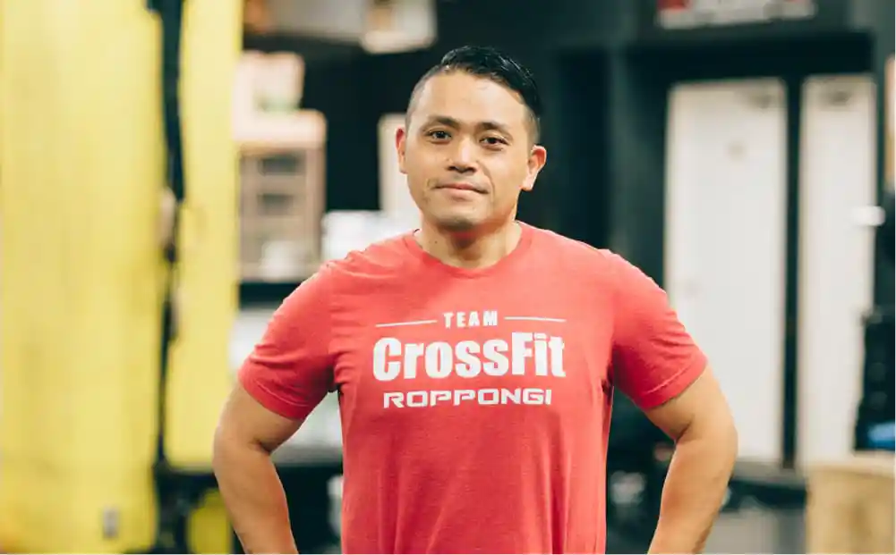
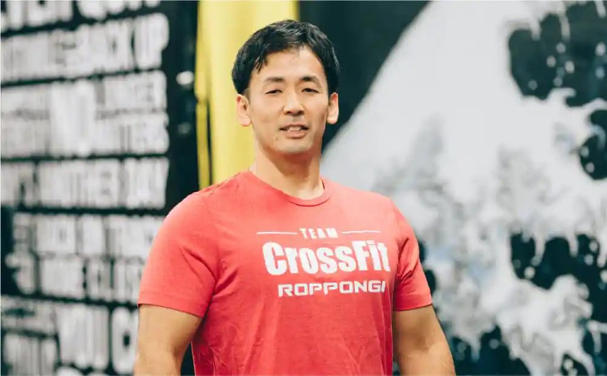
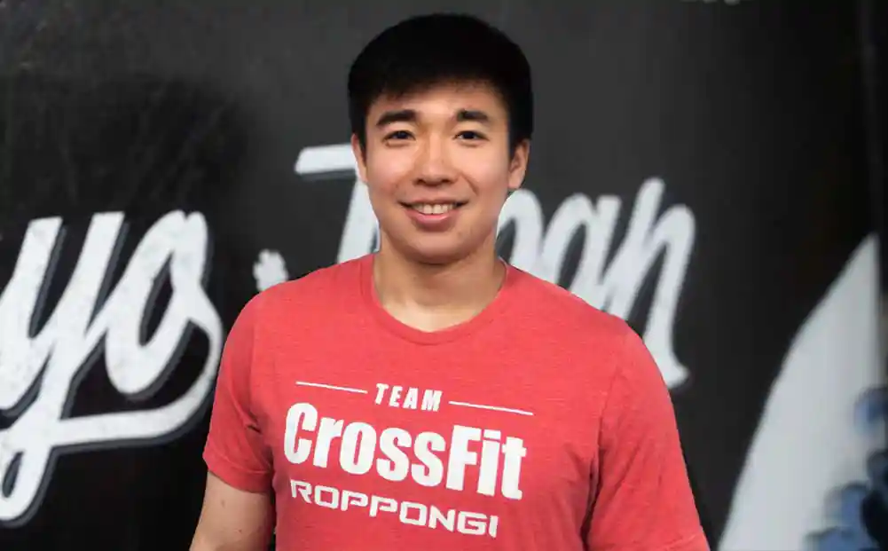
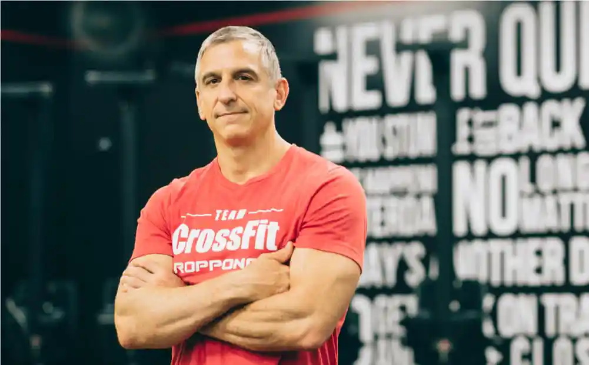
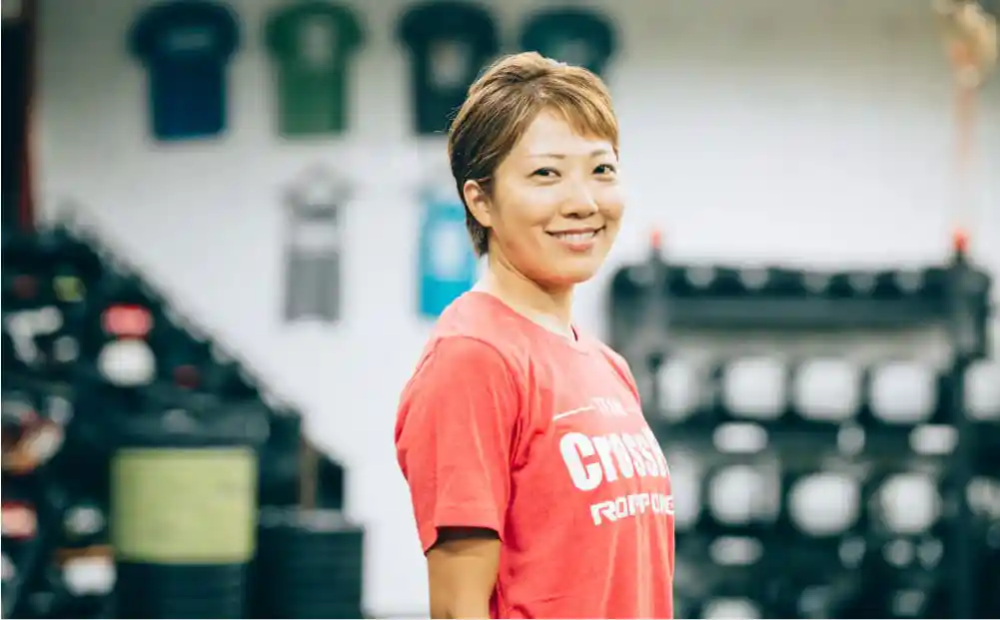
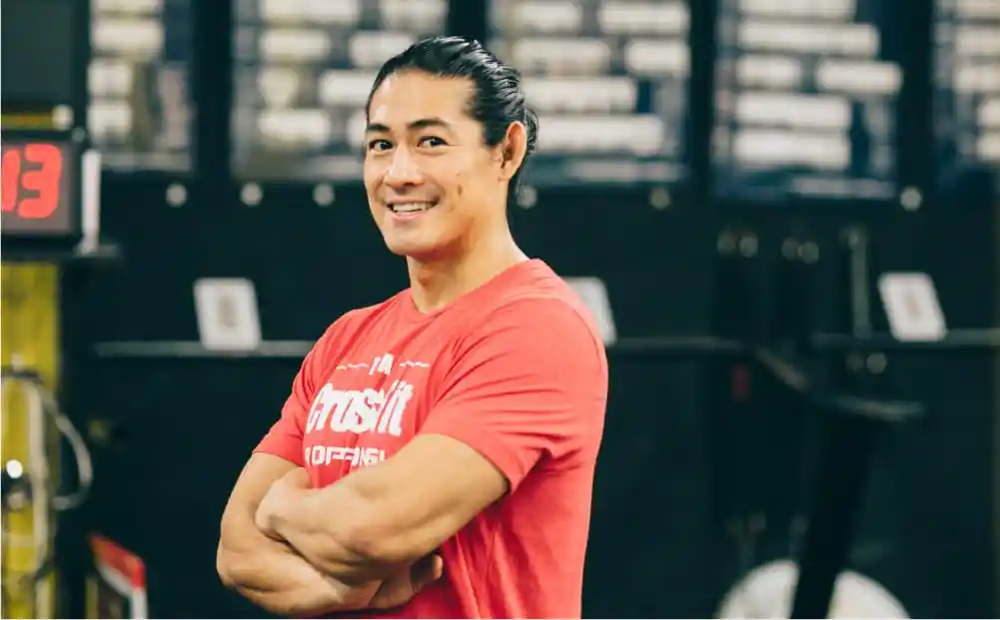
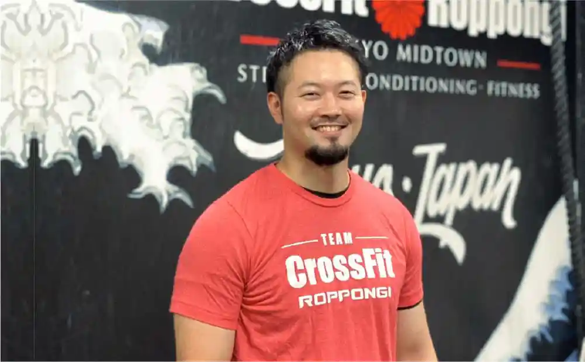
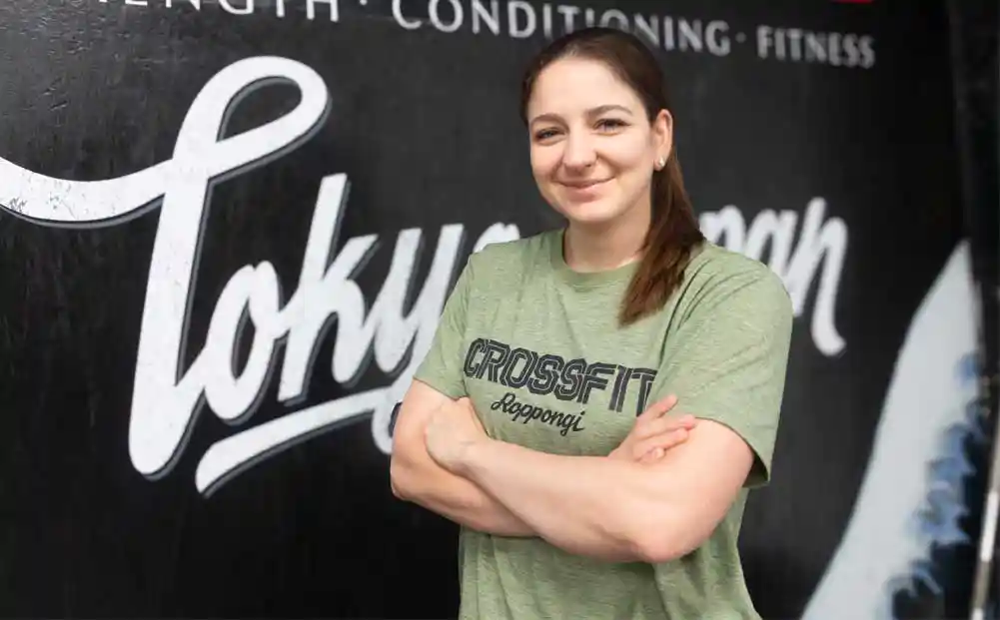

コーチ
初心者からアスリートの方まで、
経験豊富で実績あるコーチ陣が指導。
Our experienced and proven coaches can work with all skill levels -
from complete beginners to accomplished athletes.
CEO
資格
SEE MORE

HEAD COACH
資格
SEE MORE

CROSSFIT COACH / GYMNASTICS COACH
資格
SEE MORE

CROSSFIT COACH / GYMNASTICS COACH
資格

CROSSFIT COACH / SPARTAN RACE COACH
資格
SEE MORE

YOGA FOR CROSSFIT / PILATES TRAINER
資格

CROSSFIT COACH
資格

OLYMPIC WEIGHTLIFTING COACH
資格
SEE MORE
FRONT STAFF

FRONT STAFF
FRONT STAFF
FRONT STAFF
 さぁ、CrossFitを
さぁ、CrossFitを体験レッスンでは、あなたのレベルやコンディションに合わせた
効果的な60分のトレーニングを¥3,300でご体験いただけます。
世界中で支持されるCrossFitを、ぜひ体感してください。
Try CrossFit
We offer 60-minute trial lessons that are custom-designed to your current level and condition.
For just ¥3,300, you'll see what people all over the world are talking about. Come try the CrossFit experience!
Drop-in training for experienced users
Drop-ins are available for those with previous CrossFit experience.
SEE MORETraining for the Spartan Race, the world's largest obstacle race
Our bootcamp-style Spartan class will challenge your stamina and cardio fitness, as well as help you prepare for your next Spartan Race with obstacle-related strength and skill training. No experience necessay and all levels are welcome!
SEE MORE